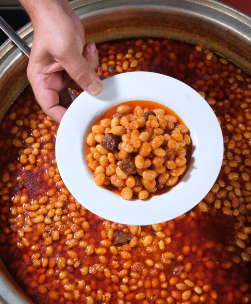
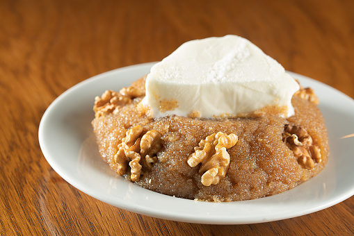
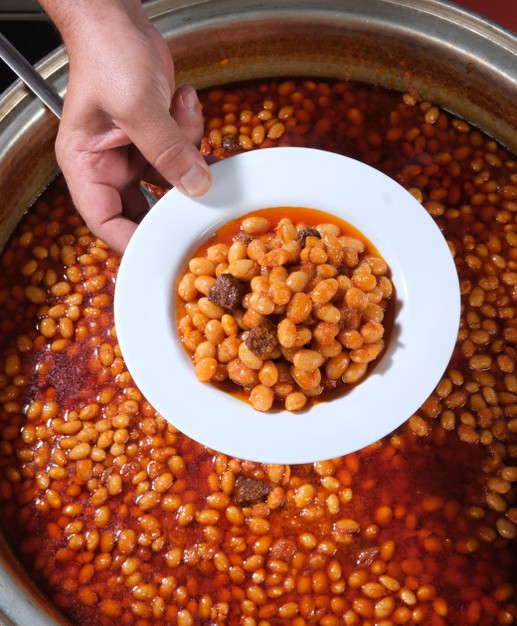
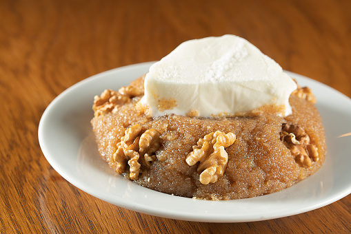
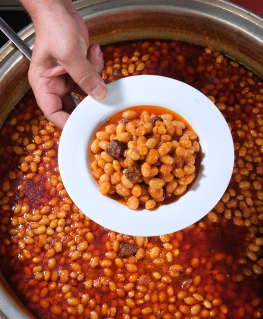
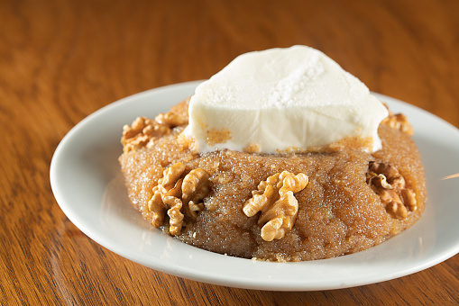

Kolay ve pratik yemek tariflerinden, herkesin bilmediği değişik yemek tariflerine, en popüler yemeklerden en yenilere, basit ve güzel tariflerden, resimli ve denenmiş tüm nefis yemek tariflerini, ayrıntılı anlatımları, malzeme listeleriyle ve püf noktalarıyla bulabileceğiniz tarif sayfası.

